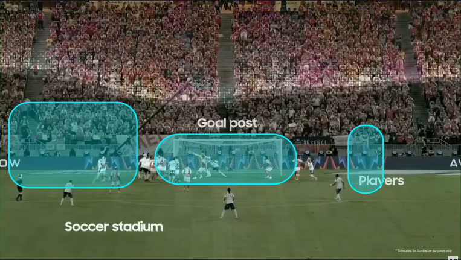
Real-Time Scene Recognition
Detects on-screen sports action instantly to serve context-aware stats and insights.
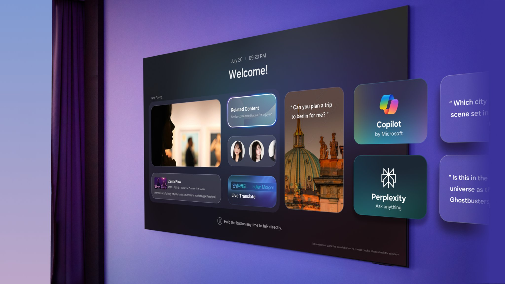
With dozens of OTT apps and endless streaming catalogs, TVs have become increasingly complicated to navigate. What used to be a relaxing living room habit has turned into an endless cycle of searching, switching, and decision fatigue.
Research in the UK revealed that viewers spend over 100 hours a year just deciding what to watch—turning leisure into a frustrating chore.
In designing Vision AI, we tackled three core challenges:
Smart TVs assume technical fluency. Layered menus and complex navigation alienate casual users and older audiences before they even hit play.
Endless recommendations often trigger decision paralysis. People spend more time scrolling through rows of tiles than actually engaging with stories.
Every search or setting adjustment takes over the entire display, abruptly breaking immersion and pulling viewers out of the moment.
How can an AI-powered TV eliminate browsing friction and bring effortless immersion back to the living room?
I structured the core interaction scenarios demonstrated during the CES 2026 keynote, showcasing how contextual AI transforms real-time viewing into active engagement.
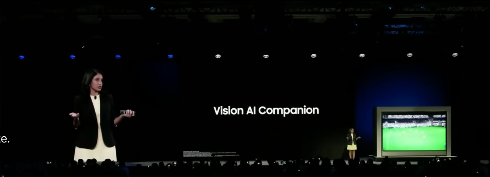
Navigating traditional smart TVs requires digging through deep menu trees. With Vision AI, users simply speak to engage with the system without pausing playback or interrupting immersion.
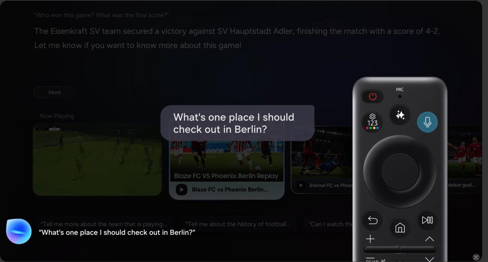
Users adjust subtitles, switch picture modes, or launch apps with natural phrases like “make the voices clearer”—instantly executed without taking over the full screen.
Casual intents such as “something fun and light tonight” or “who is that actor?” return concise, glanceable visual cards directly linked to what is currently playing.
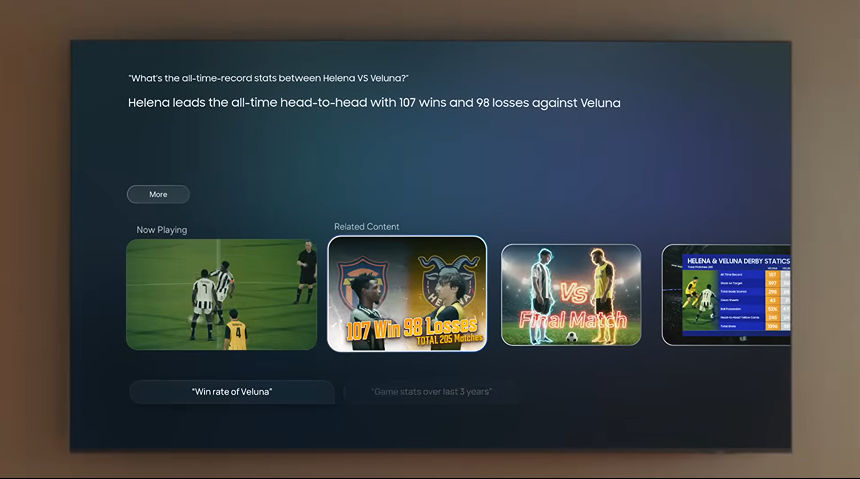
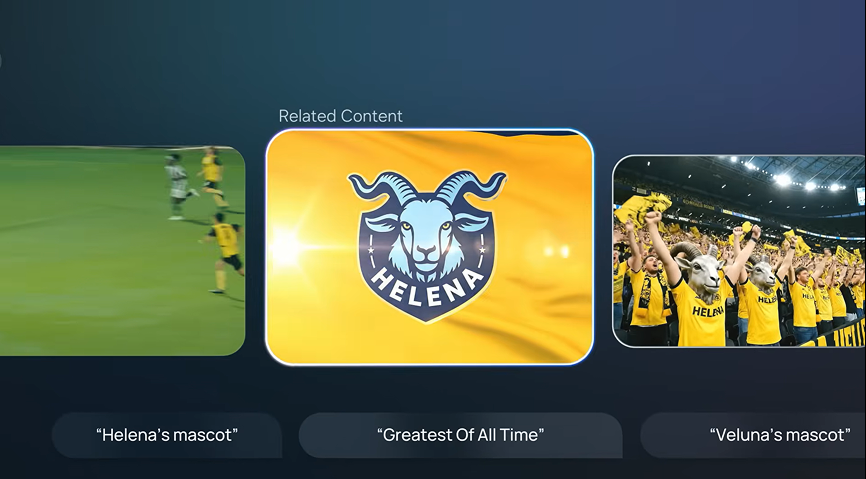
Conventional TV interfaces force users to choose between watching content or searching menus. Vision AI Home introduces a lightweight, responsive overlay triggered by a single remote click.
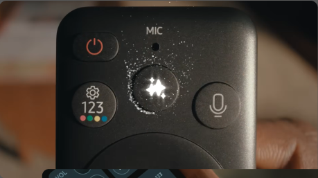
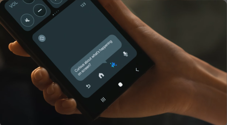
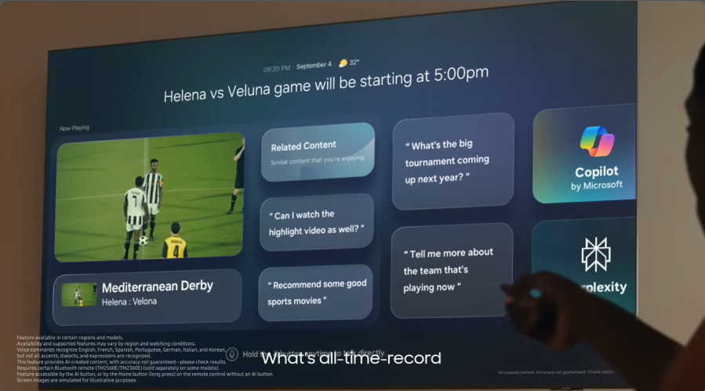
Viewers can discover music tracks, identify fashion items, or look up cast members without exiting the active video stream.
Rather than overwhelming the screen with endless tiles, we conducted A/B testing to limit the interface to high-confidence, contextually relevant cards—maximizing discovery while minimizing decision fatigue.
Most TVs spend 80% of their day as a lifeless black rectangle in the center of the living room. Vision AI redefines the idle screen into a dynamic, sensing canvas that adapts to the mood of the home.
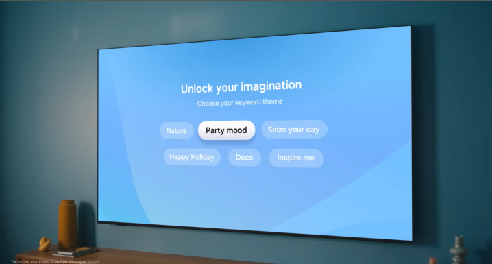
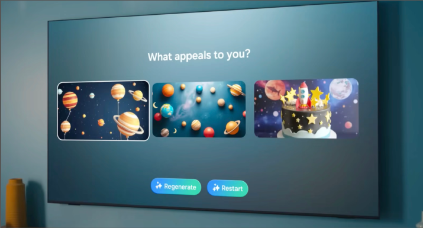
Users simply pick an intuitive atmosphere keyword, and the system generates responsive visuals and background audio tailored to the living space.
Through casual voice prompts, viewers can refine lighting, tempo, or visual themes, turning the screen from a static appliance into an ambient companion.
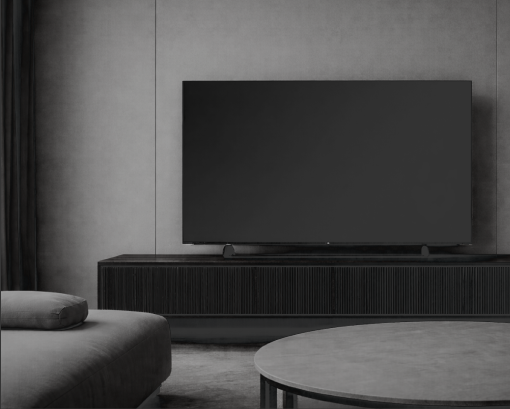
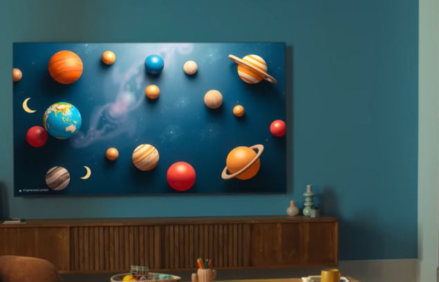
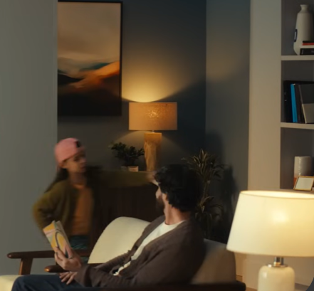
Designing conversational AI for the living room taught me that pure speed doesn’t equal user trust. When AI presents answers out of nowhere, users often feel alienated or skeptical.
During testing, engagement increased significantly when the system briefly showed why it recommended a title or recipe rather than simply serving the output.
We designed progressive disclosure cues so viewers can follow the AI’s reasoning steps, transforming the interaction from a mysterious black box into an accountable conversation.
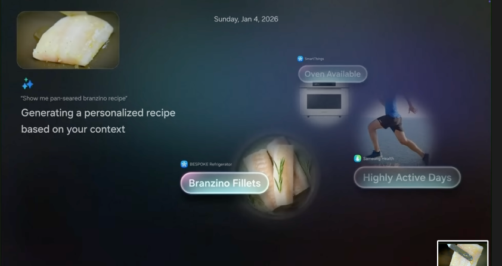
Advanced AI shouldn’t require prompt engineering skills. Many living room users—especially older adults or casual viewers—struggle to formulate precise natural language queries.
Where conventional AI demands articulate prompts, Vision AI utilizes glanceable, card-based visual affordances.
By putting clear, tappable options right on the screen, we drastically reduced both motor and cognitive load, establishing a truly universal interaction model for every family member.
The ultimate trap in AI UX is creating passive dependence. If the system automates everything, the user loses their sense of choice.
We shifted the role of TV AI from a command executor to a conversational partner that stimulates curiosity without taking over.
By blending context-aware suggestions with serene ambient visuals during idle states, the screen respects the physical living space, remaining ready to assist without demanding continuous attention.